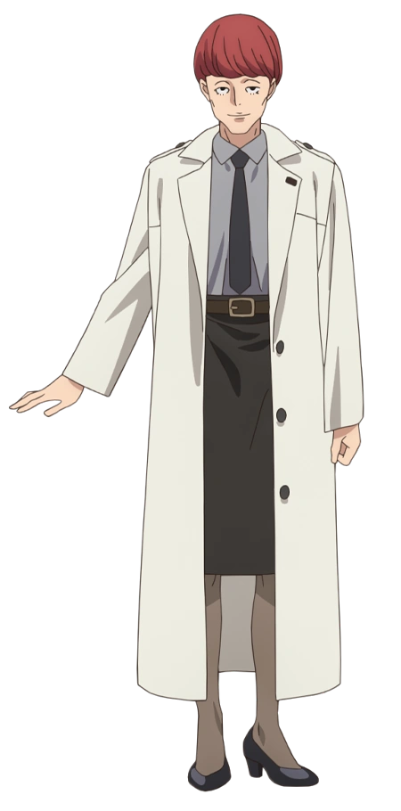

Kusunoki (楠木)

Kusunoki is a middle-aged woman with short red hair and black eyes. She is most commonly seen wearing a light grey shirt with a dark grey tie, a black skirt and white trench coat, along with black heels. A 'DA' monogram is visible on the lapel of her coat. Her face has distinctly chiselled features, with a clear bone structure and no eyebrows.
Kusunoki is the current commander of Direct Attack, and as such, all Lycoris answer to her. Stern and pragmatic, she is willing to make sacrifices and lie in order to protect the integrity of her organization, even if it comes at a cost to her subordinates. Despite this, she has shown to have a warmer attitude towards certain Lycoris, such as Chisato, though she does not express this publicly.
Harukawa Fuki (春川 フキ)
Fuki is a young girl with short, dark brown hair and purple eyes. She's usually seen wearing her red Lycoris 1st uniform paired with gray tights.
A 1st Lycoris of the DA's Tokyo Branch and the ex-partner of Takina. She is noted to always have "her head on straight" and remains staunchly dedicated to the DA, with extreme beliefs on what is and isn't appropriate for a Lycoris.
Otome Sakura (乙女サクラ)
Sakura is a young girl with short, undercut, auburn hair and brown eyes. She is most commonly seen wearing her navy blue 2nd Lycoris uniform paired with chunky, teal sneakers.
A 2nd Lycoris of the Direct Attack Tokyo Branch. She became Fuki Harukawa's new partner in place of Takina Inoue.